This tutorial walks through one complete run of
stimulus_pipeline.praat on the demo recording that comes
with the script. It takes about five minutes. The screenshots are from
runs on the two demo recordings, so you can follow along and should see
the same windows.
The demo recording (example/demo_list.wav) is synthetic
speech: eight English words, each said three times in a row. One mistake
is built in. After the first river, the speaker says “um”. The
script will find 25 words where the list expects 24, and you will fix
that by hand.
You need Praat (tested with version 6.4.43).
Later sections cover how to choose settings for your own stimuli, and how to let the script tune the segmentation settings on a stretch of your recording that you have corrected by hand.
The script needs two things: a recording and a CSV with the words in the order they were read.
words <- read.csv("../example/demo_list.csv")
words## stimuli
## 1 apple
## 2 banana
## 3 window
## 4 river
## 5 backpack
## 6 lemon
## 7 feather
## 8 yellowEach word is listed once, even though it was said
three times. You tell the script about the repetitions in the form. The
column name (stimuli) is the script’s default. If your
column has another name, you type it into the form. Extra columns are
fine and are ignored.
If you keep your word list in R, writing the CSV is one line:
write.csv(data.frame(stimuli = c("apple", "banana", "window")),
"my_list.csv", row.names = FALSE, fileEncoding = "UTF-8")A few things make the automatic segmentation work well:
xxx, as you will do below.In Praat, choose Praat > Open Praat script… and
open stimulus_pipeline.praat. The script window opens. The
comment block at the top summarises what the script does.
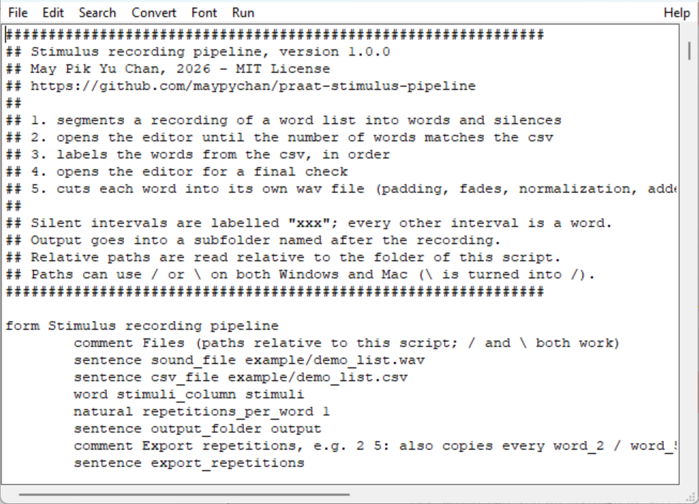
Choose Run > Run (or press Ctrl+R). The form appears.
This is the form with its default values. The sound file and csv file already point to the demo:
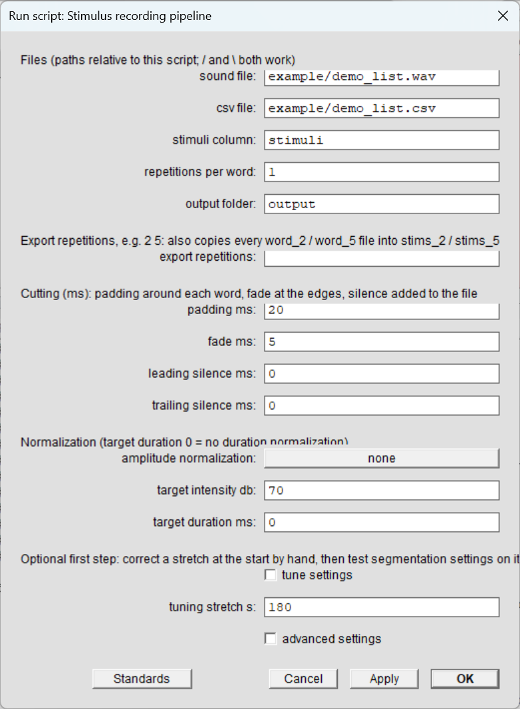
The form with its default values.
For the demo, change three fields:
| Field | Value | Why |
|---|---|---|
| repetitions per word | 3 |
each word was said three times in a row, so the script expects 8 x 3 = 24 words |
| output folder | example/output |
results go into example/output/demo_list/ |
| export repetitions | 2 |
also collect every second repetition into its own folder (for example, if you want the middle token of each word) |
Relative paths are read relative to the folder the script is in, so
these work as long as the example folder sits next to the
script, wherever you put the two. For your own recordings, type the path
to your files the same way, relative to the script
(recordings/speaker01.wav) or in full.
You can use / or \ in paths on any
computer. The script turns every \ into /
before it opens a file, and Praat reads / on Windows, Mac
and Linux alike. So a path typed on a Windows machine
(example\demo_list.wav) still works when the same settings
are used on a Mac. Forward slashes are the safest habit.
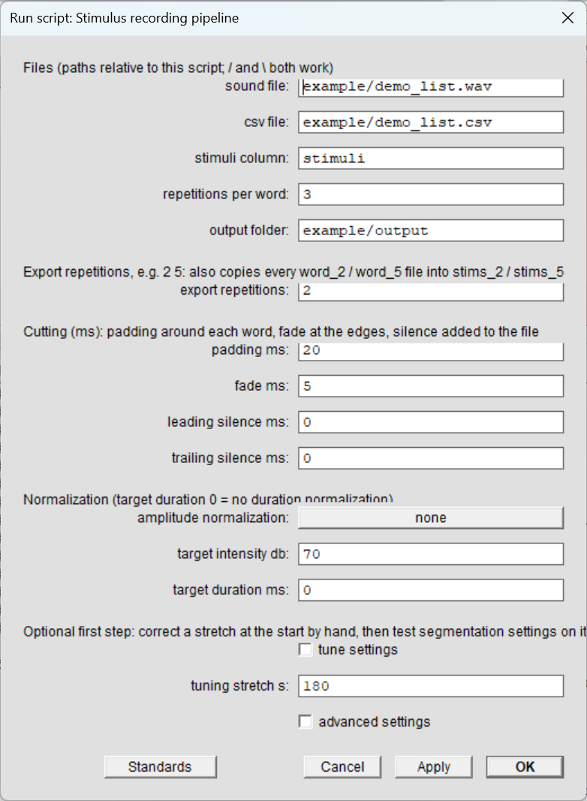
The form filled in for the demo.
Leave the cutting and normalization settings at their defaults for now: 20 ms of padding from the recording around each word, 5 ms fades, no normalization. The README on GitHub describes every field.
For this tutorial, also tick advanced settings, so you can see what is there. Then click OK.
Because advanced settings was ticked, a second window opens before anything happens.
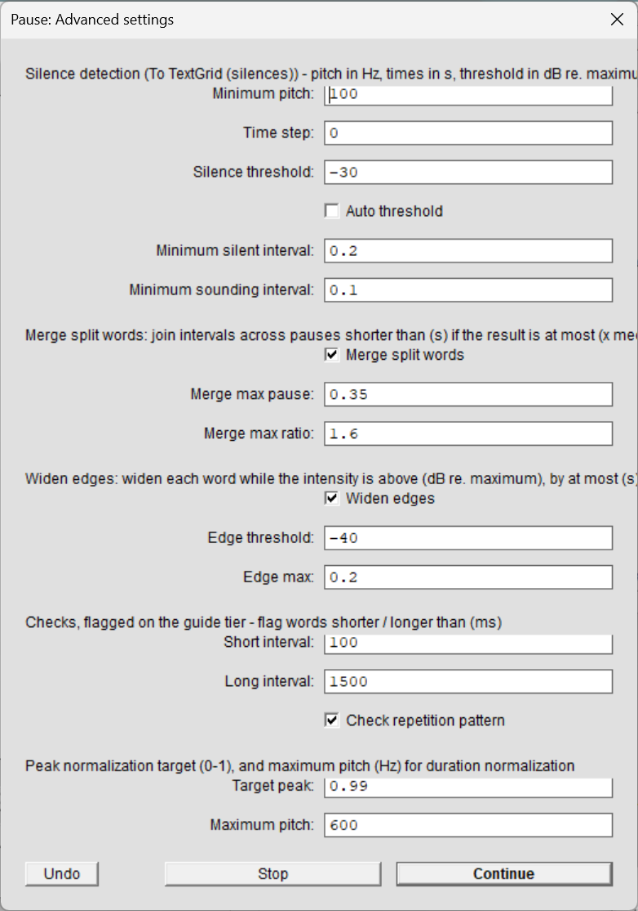
The advanced settings. The defaults work for most recordings.
The first block is the silence detection itself. The silence threshold is in dB below the loudest point of the recording, so -30 means “anything 30 dB quieter than the peak counts as silence”. The next two blocks repair the two most common segmentation errors:
The checks block sets which words get flagged as suspiciously short or long. Click Continue. Most of the time you can leave advanced settings unticked and skip this window.
The script segments the recording and counts the words. The demo has 25 sounding intervals (24 words and the “um”), but the CSV expects 24. So the TextGrid editor opens, with a pause window explaining the problem.
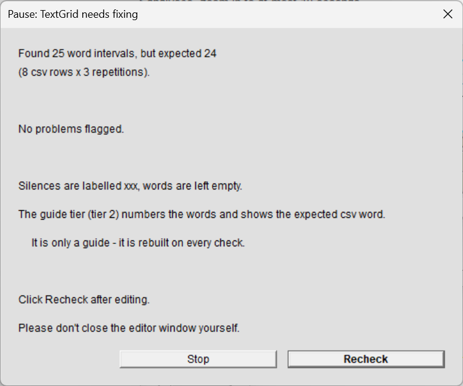
The script found one word too many.
The editor shows the recording with two tiers:
silences) is the segmentation.
Pauses are labelled xxx; words are empty. This is the tier
you edit, and the only one used for cutting.guide) numbers the words and
shows which CSV word each will receive, along with any warnings. It is
rebuilt every time you click Recheck, so there is no point
editing it.Zoomed in around 15 s, the problem is visible:
To zoom in, drag across the waveform to select a stretch and press Ctrl+N (or click sel at the bottom left). Click all to see the whole recording again. You can play a selection with the Tab key, which is the quickest way to find out what an interval contains.
The guide tier is the key to finding the error. Read along it: 10 river, 11 river, 12 river, 13 backpack. But the waveform shows three tokens of river and one short token between the first two. Wherever the guide labels stop matching what you hear, the mistake is at or just before that point.
The “um” is not a list word, so label it as a pause. Click inside its
interval on tier 1 to select it, and type xxx.
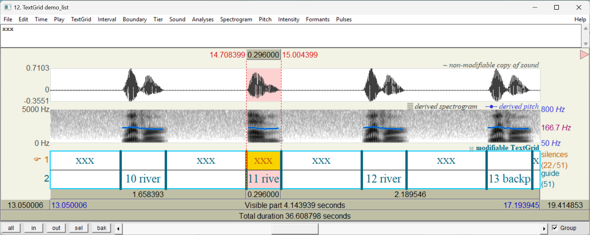
The other common fixes work the same way, all on tier 1:
| Problem | Fix |
|---|---|
| a cough, breath, click or false start was taken as a word | label it xxx |
| one word was split into two intervals | remove the boundaries around the xxx gap between the
pieces (click a boundary and press Alt+Backspace), then delete the
leftover xxx text so the joined interval is empty |
| two words were merged into one interval | click in the pause between them and press Enter to add a boundary.
Add a second one and label the stretch between them xxx, so
the pause stays silent |
| a word was missed entirely | add boundaries at its start and end, and leave the interval empty |
Leave the word intervals themselves empty. If you type text into one,
the script reports it as stray text and offers a Stray
text = silence button that turns such labels into
xxx.
Click Recheck in the pause window. If the count still does not match, the editor comes back with an updated guide tier. Repeat until it matches. Do not close the editor window yourself; always use the buttons in the pause window.
Once the count is right, the script writes the CSV words into tier 1 and opens the editor again for a final check.
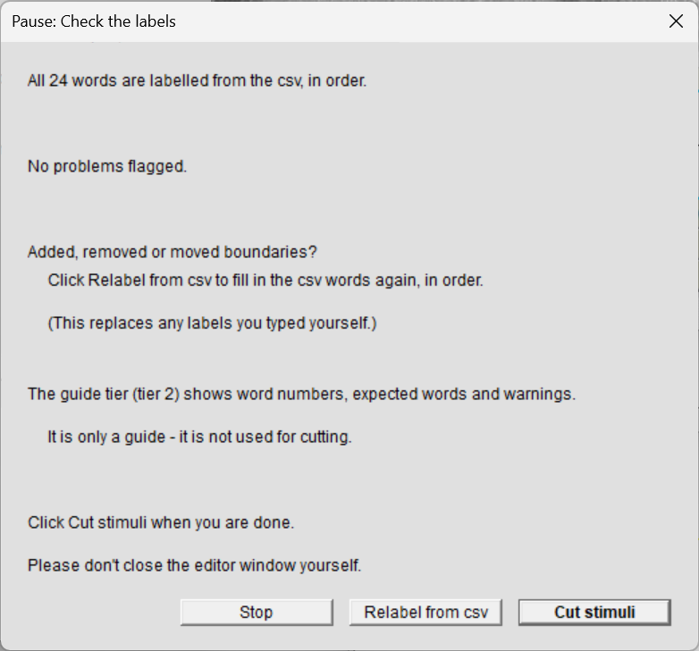
The final check: all 24 words are labelled, with no warnings.
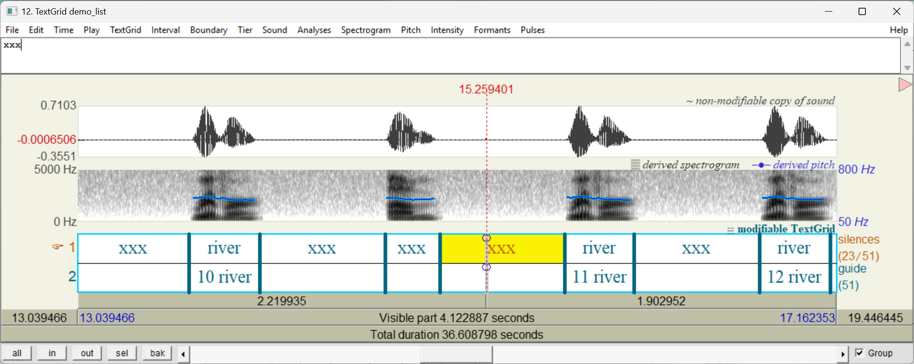
This is the moment to check the boundaries, since they decide where each file is cut. Listen to a few words and look for clipped onsets or offsets. If you move a boundary, the labels stay as they are. If you add or remove boundaries, click Relabel from csv to fill in the words again in order. Relabelling replaces anything you typed by hand. If the count no longer matches, the script goes back to the fixing step.
The summary in the pause window lists any warnings. A clean run says “No problems flagged”. The warnings are:
All flags also appear on the guide tier, and the Info window lists them with times.
When you are happy, click Cut stimuli.
The script cuts, processes and saves every word, and reports each file in the Info window.
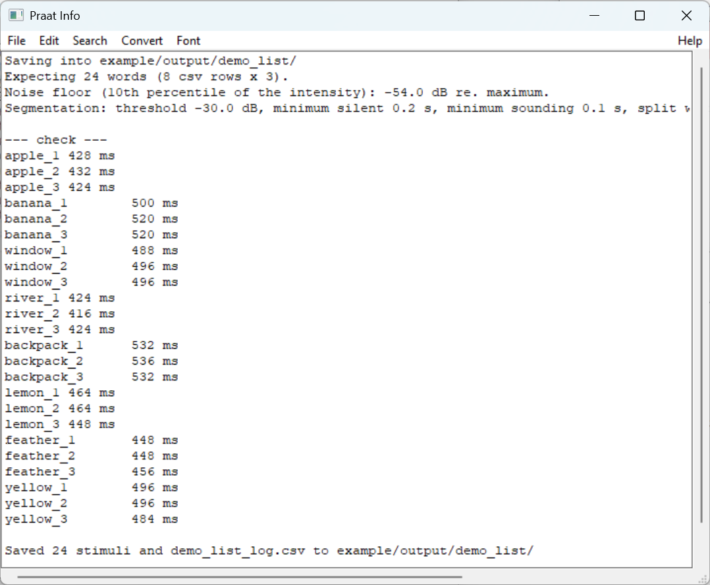
The Info window after cutting: one line per file, then a summary.
The output folder example/output/demo_list/ now
contains:
demo_list/
├── apple_1.wav apple_2.wav apple_3.wav
├── banana_1.wav banana_2.wav banana_3.wav
├── ... (24 WAV files)
├── demo_list.TextGrid the final labelled TextGrid
├── demo_list_log.csv one row per file
├── sf_dur_2.csv durations of the stims_2 files
└── stims_2/
├── apple_2.wav
├── banana_2.wav
└── ... (8 WAV files, one per word)Repeated words are numbered in recording order, so
river_2.wav is the second river the speaker said,
not counting the “um”. A word that occurs only once in the recording
gets no number.
If you run the script again on the same recording, it asks whether to
overwrite the folder or save into a new one (demo_list_2,
demo_list_3, …). Overwriting replaces files with the same
names and leaves any others in place.
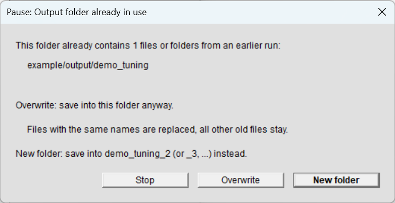
Running the script a second time on the same recording.
The log records where every file came from. A copy from the demo run
is in example/demo_output/:
log <- read.csv("../example/demo_output/demo_list_log.csv")
knitr::kable(head(log, 9), digits = 3)| n | label | file | rep | start | end | word_ms | file_ms | clipped | note |
|---|---|---|---|---|---|---|---|---|---|
| 1 | apple | apple_1 | 1 | 1.096 | 1.484 | 388 | 428 | 0 | NA |
| 2 | apple | apple_2 | 2 | 2.156 | 2.548 | 392 | 432 | 0 | NA |
| 3 | apple | apple_3 | 3 | 3.220 | 3.604 | 384 | 424 | 0 | NA |
| 4 | banana | banana_1 | 1 | 5.120 | 5.580 | 460 | 500 | 0 | NA |
| 5 | banana | banana_2 | 2 | 6.292 | 6.772 | 480 | 520 | 0 | NA |
| 6 | banana | banana_3 | 3 | 7.484 | 7.964 | 480 | 520 | 0 | NA |
| 7 | window | window_1 | 1 | 9.468 | 9.916 | 448 | 488 | 0 | NA |
| 8 | window | window_2 | 2 | 10.596 | 11.052 | 456 | 496 | 0 | NA |
| 9 | window | window_3 | 3 | 11.724 | 12.180 | 456 | 496 | 0 | NA |
start and end are the word’s position in
the original recording, in seconds. word_ms is the word
itself and file_ms the whole file, here 40 ms longer
because of the 20 ms of padding on each side. clipped is 1
if the file’s peak went above 1, which happens most often with RMS
normalization to a high target.
Because the log keeps the original times, you can always go back from a stimulus file to the moment in the recording it came from.
The log is also a quick way to look for outliers before you use the stimuli. For example, the duration of every token, by word:
library(ggplot2)
log$label <- factor(log$label, levels = unique(log$label))
ggplot(log, aes(x = label, y = word_ms)) +
stat_summary(fun = mean, geom = "crossbar", width = 0.5, linewidth = 0.3,
colour = "grey55") +
geom_point(position = position_jitter(width = 0.12, height = 0, seed = 1),
size = 2.5, colour = "#1f4e8c") +
labs(x = NULL, y = "Word duration (ms)") +
theme_minimal(base_size = 12) +
theme(panel.grid.major.x = element_blank(), panel.grid.minor = element_blank())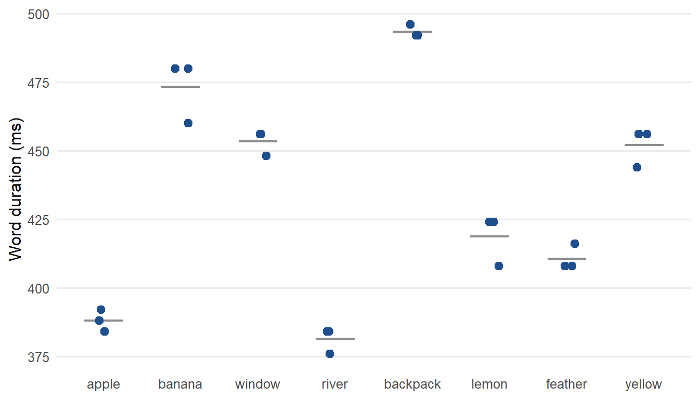
Word durations in the demo, three tokens per word. The grey bar marks each word’s mean.
A token far from the others of the same word usually points to a boundary worth checking in the TextGrid. With real speakers, expect much more spread than in this synthetic demo.
sf_dur_2.csv lists the files that were copied into
stims_2/, with their durations in seconds:
knitr::kable(read.csv("../example/demo_output/sf_dur_2.csv"), digits = 3)| sound_file_name | sound_duration |
|---|---|
| apple_2.wav | 0.432 |
| banana_2.wav | 0.520 |
| window_2.wav | 0.496 |
| river_2.wav | 0.416 |
| backpack_2.wav | 0.536 |
| lemon_2.wav | 0.464 |
| feather_2.wav | 0.448 |
| yellow_2.wav | 0.496 |
The defaults were chosen for a careful reader in a quiet room, saying words of one to three syllables with clear pauses. If your recording is like that, leave them alone. If it is not, you can usually work out better settings from three things you already know: what the words sound like, how the speaker paced the list, and how noisy the recording is.
Two numbers are worth checking before changing anything.
Noise floor (10th percentile of the intensity): -54.0 dB re. maximum
for the quiet demo above, and -34.2 dB for the noisy demo in the next
section). The silence threshold must sit clearly above it. The script
warns you when it is less than 10 dB above.All of these are in the advanced settings window.
| Setting | What it decides | Choose it from |
|---|---|---|
| Silence threshold (-30 dB) | how quiet a frame must be to count as silence, relative to the loudest point | the noise floor: at least 10 dB above it. Lower (e.g. -35) keeps weak sounds such as /f/, /h/ and breathy offsets inside the word; higher (e.g. -25) copes with background noise |
| Minimum silent interval (0.2 s) | the shortest pause that separates two words | must be longer than the longest silence inside a word, and shorter than the shortest pause between tokens |
| Minimum sounding interval (0.1 s) | the shortest sound that counts as a word | shorter than your shortest word (very short words such as egg or up can be around 0.15 s), longer than clicks and lip smacks |
| Merge split words: max pause (0.35 s) | pauses shorter than this may be joined across | shorter than the pauses between tokens, or repetitions said close together get joined |
| Merge split words: max ratio (1.6) | a join is only made if the result is at most this many times the median word | raise it (to 2-2.5) when your list mixes short and long words, so a split long word can still be rejoined |
| Widen edges: edge threshold (-40 dB), edge max (0.2 s) | how far each word is extended outward into quieter sound | lower the threshold (-45) for weak fricative onsets and offsets; turn widening off if you want the tightest possible cuts |
| Minimum pitch (100 Hz) | the window of the intensity analysis | 75 Hz for low or creaky voices; a lower value smooths the intensity more, so very short pauses can disappear |
| Short / long interval (100 / 1500 ms) | which words get the SHORT and LONG
flags |
just below your shortest and just above your longest expected word |
| Check repetition pattern | the SHIFT flags |
turn it off if the speaker did not pause longer between different words than between repetitions |
The threshold is relative to the loudest moment in the whole file. A single loud cough, laugh or microphone bump at the start raises that reference, so ordinary speech then looks quiet and words start to split. If that happens, trim the bump before running the script, or raise the threshold. The auto threshold option sets the threshold from the recording’s own intensity distribution (halfway between its 25th and 75th percentiles), which can help when you do not know where to start.
These are in the main form, and they depend on what the stimuli are for rather than on the recording.
intensity (RMS) gives every word roughly the same loudness,
which is what most perception experiments need. It is measured on the
word without the padding. peak gives every file the same
maximum, which is safer against clipping but leaves loudness
differences. With RMS, check the clipped column of the log;
if any file clipped, lower target intensity db (e.g. to
65).| Your recording | What to change |
|---|---|
| A quiet booth, one- to three-syllable words, clear pauses | nothing |
| Words with long closures inside them (bookcase, hotdog, geminates in Italian or Japanese, tense stops in Korean), and some of them come out split | keep merge split words on. If they are still split and the pauses between tokens are longer than 0.4 s, raise minimum silent interval to 0.25-0.3 s |
| A list that mixes one-syllable and five-syllable words | merge max ratio 2-2.5, long interval 2000-2500 ms |
| A laptop or phone microphone, a fan or traffic in the background | check the noise floor and raise the threshold to at least 10 dB above it (-25 or -20 dB), or use tune settings |
| A fast reader, about 0.25 s between repetitions | minimum silent interval 0.15 s and merge max pause 0.2 s, so repetitions are neither merged by silence detection nor joined afterwards |
| Many weak onsets (feather, thimble, honey, vowel-initial words) | silence threshold -35 dB and edge threshold -45 dB, as long as the noise floor allows it |
| A low, creaky voice | minimum pitch 75 Hz |
When you are unsure between two settings, you do not have to guess: correct a stretch of the recording by hand and let the script compare them, as the next section shows.
For long recordings it pays to spend a few minutes correcting the
start by hand and letting the script find the settings that best
reproduce your corrections. This section does that on the second demo,
example/demo_tuning.wav: twelve words said three times
each, with background noise loud enough that the default settings merge
words.
Set the form as below and tick tune settings:
| Field | Value |
|---|---|
| sound file | example/demo_tuning.wav |
| csv file | example/demo_tuning.csv |
| repetitions per word | 3 |
| output folder | example/output |
| tune settings | ticked |
| tuning stretch s | 20 |
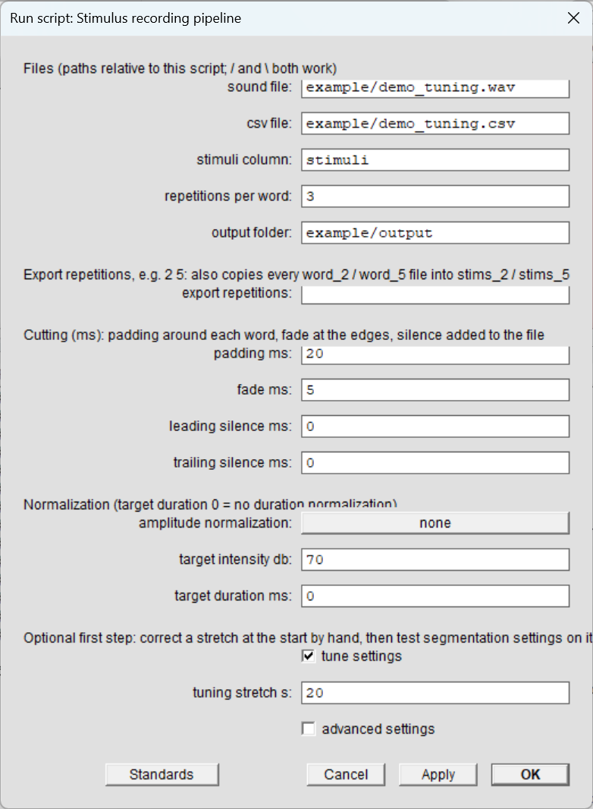
The form for a tuning run.
tuning stretch s sets how much of the start you will correct. The demo is only 42 s long, so 20 s is plenty. For a real recording, keep the default 180 s or pick a stretch that holds at least 50-100 tokens and the kinds of problems you expect in the rest. The stretch must contain at least 10 words.
The script segments the recording with the current settings, marks
the stretch on a tuning tier, and pauses.
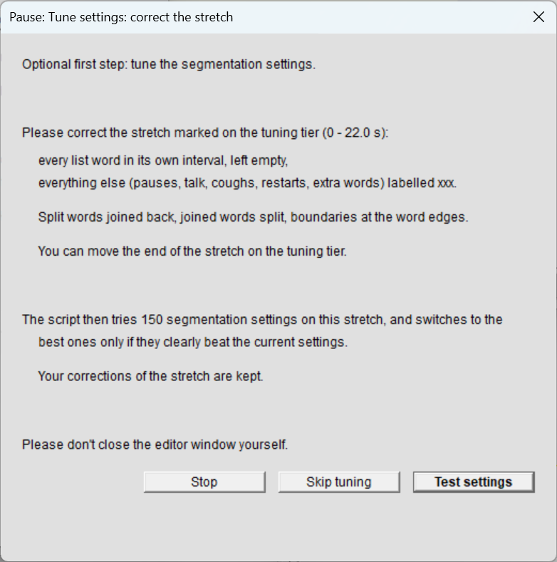
The tuning pause window. The stretch here runs from 0 to 22 s, ending in the middle of a pause.
Correct tier 1 inside the stretch so that it is right: every list
word in its own empty interval, everything else (pauses, coughs, false
starts, extra words) labelled xxx, with the boundaries at
the word edges. You can move the end of the stretch by dragging the
boundary on the tuning tier.
In the demo, the noise fills some pauses, so pairs of words come out as one interval. Here the third hotdog and the first island were merged:
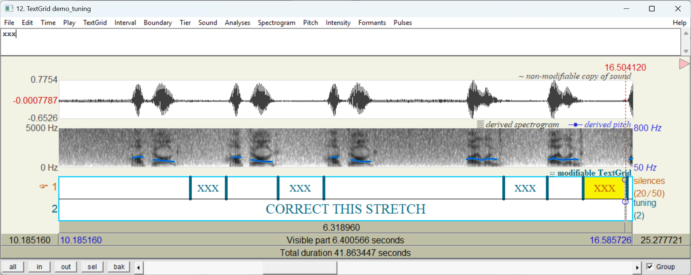
To split them, click at the end of hotdog on tier 1 and
press Enter to add a boundary, do the same at the start of
island, and label the new interval between them
xxx:
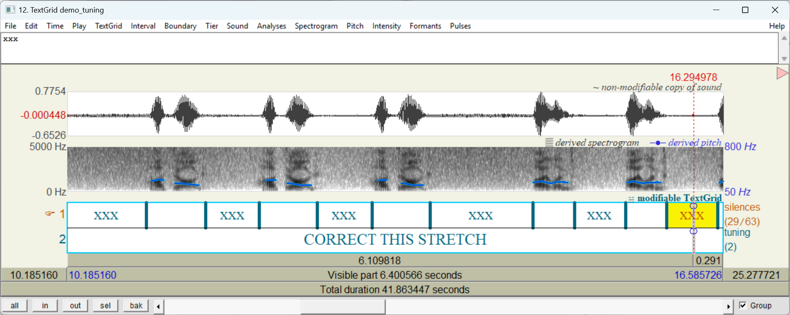
Do this for every error in the stretch. The scoring trusts your corrections, so take care with them; a mistake left in the stretch counts against the settings that got that word right. Then click Test settings. (Skip tuning goes straight on to the normal run with the current settings.)
The script scores 150 combinations of four settings on your stretch, plus the current settings:
For each one it counts the corrections you would have had to make: words split in two, words merged together, words missed, and short extra intervals. It switches to the best combination only if that needs at least 3 corrections, and 30%, fewer than the current settings; otherwise it keeps your settings. The result is at the top of the Info window:
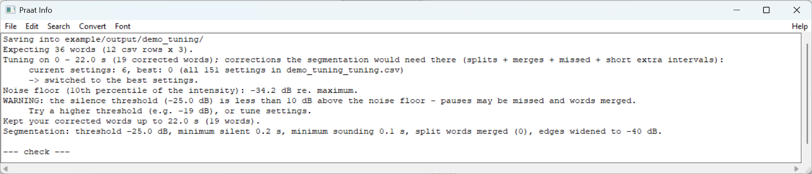
In the demo, the defaults (-30 dB) would have needed 6 corrections in the stretch, all merges. The best settings need none, and the script switched to a threshold of -25 dB. The noise-floor warning still appears, because -25 dB is less than 10 dB above the floor of -34 dB. The warning is a rule of thumb; your corrected stretch is direct evidence, and here it shows -25 dB works.
The corrected stretch is kept as you left it, and the new settings are used only from the end of the stretch onward. In the demo, that was enough for the whole recording: the count matched at the first check, so the script skipped the fixing step and went straight to the final label check.
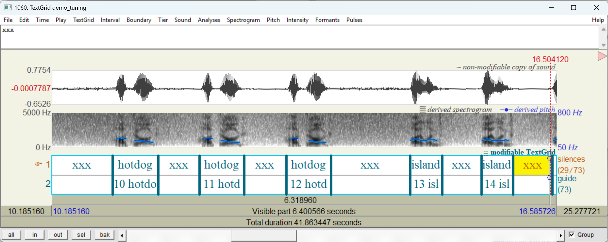
Every setting’s score is saved in
<recording>_tuning.csv in the output folder. A copy
from the demo run is in example/demo_output/:
tuning <- read.csv("../example/demo_output/demo_tuning_tuning.csv")
knitr::kable(head(tuning[, 1:11], 6))| to_fix | splits | merges | missed | short_extra | long_extra | threshold | min_silent | min_sounding | merge | current |
|---|---|---|---|---|---|---|---|---|---|---|
| 0 | 0 | 0 | 0 | 0 | 0 | -25 | 0.20 | 0.10 | 1 | 0 |
| 0 | 0 | 0 | 0 | 0 | 0 | -25 | 0.20 | 0.15 | 1 | 0 |
| 0 | 0 | 0 | 0 | 0 | 0 | -25 | 0.25 | 0.10 | 1 | 0 |
| 0 | 0 | 0 | 0 | 0 | 0 | -25 | 0.20 | 0.10 | 0 | 0 |
| 0 | 0 | 0 | 0 | 0 | 0 | -25 | 0.20 | 0.05 | 1 | 0 |
| 0 | 0 | 0 | 0 | 0 | 0 | -25 | 0.15 | 0.10 | 1 | 0 |
to_fix is the total number of corrections
(splits + merges + missed + short_extra). Long extra
intervals (long_extra, 0.25 s or more) are not counted,
because they are usually real extra productions that you would label
xxx anyway. Rows with the same to_fix are
sorted by how close they are to your current settings, so the script
prefers the smallest change that works. current = 1 marks
the settings you started with:
knitr::kable(tuning[tuning$current == 1, 1:11])| to_fix | splits | merges | missed | short_extra | long_extra | threshold | min_silent | min_sounding | merge | current | |
|---|---|---|---|---|---|---|---|---|---|---|---|
| 61 | 6 | 0 | 6 | 0 | 0 | 0 | -30 | 0.2 | 0.1 | 1 | 1 |
The table also shows how sensitive the recording is to each setting. Here, the threshold is what matters:
sub <- subset(tuning, current == 0 & min_sounding == 0.1 & merge == 1)
ggplot(sub, aes(x = factor(threshold), y = factor(min_silent), fill = to_fix)) +
geom_tile(colour = "white", linewidth = 1) +
geom_text(aes(label = to_fix, colour = to_fix > max(to_fix) / 2), size = 4) +
scale_fill_gradient(low = "#eef3fb", high = "#1f4e8c", guide = "none") +
scale_colour_manual(values = c(`FALSE` = "#1b1b1b", `TRUE` = "white"), guide = "none") +
labs(x = "Silence threshold (dB re. maximum)", y = "Minimum silent interval (s)") +
theme_minimal(base_size = 12) +
theme(panel.grid = element_blank())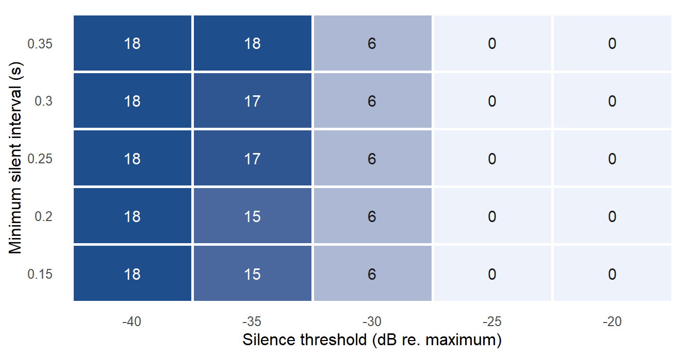
Corrections needed in the demo stretch, by silence threshold and minimum silent interval (minimum sounding 0.1 s, merging on). Darker cells need more corrections.
At -20 and -25 dB every minimum silent interval works. From -30 dB down, the noise starts to fill the pauses and the counts climb quickly. On a quiet recording the grid is usually low across a wide range of settings, and the script keeps yours.
Normalizing the stimuli. Set amplitude
normalization to peak to scale every file to the same
peak, or to intensity (RMS) to give every word the same
loudness (target intensity db). Set target duration ms
above 0 to stretch or compress every word to the same duration. The
order of processing is: cut the word, normalize its duration, add
padding, fade, normalize amplitude, add silence.
Adding silence. leading silence ms and trailing silence ms add digital silence before and after each file, for example to give every stimulus the same onset delay in an experiment.
When something goes wrong. Stop in any pause window ends the script but leaves the Sound and TextGrid in the Praat Objects window. You can save the TextGrid from there (Save > Save as text file…) so your edits are not lost. The README on GitHub has a troubleshooting list for common error messages.
If you use the script to prepare stimuli for a study, please cite it as:
Chan, M. P. Y. (2026). Stimulus recording pipeline: a Praat script for cutting word-list recordings into stimulus files (Version 1.0.0) [Computer software]. https://github.com/maypychan/praat-stimulus-pipeline
and cite Praat (Boersma & Weenink, https://www.praat.org). The script is released under the MIT License.